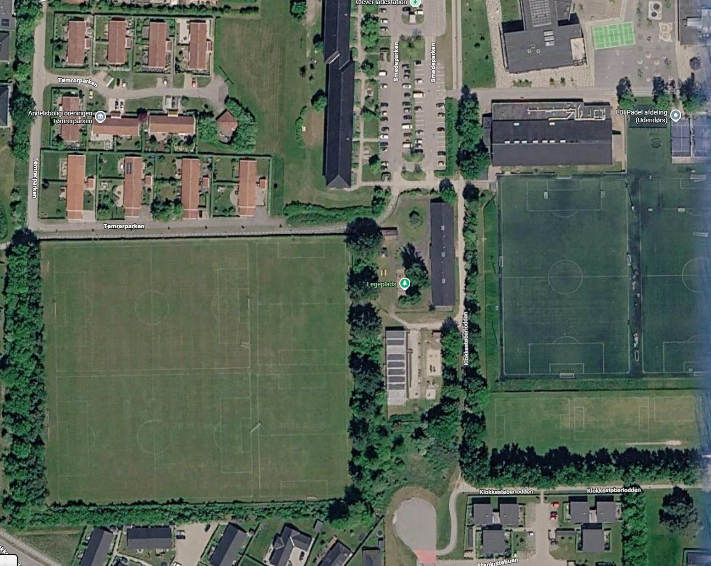
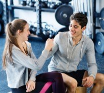
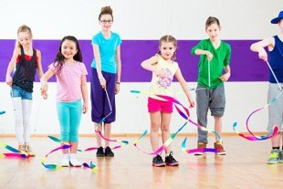

1
Et anerkendt behov
Også kommunen ser, at den voksende bydel mangler tilbud til idræt, kultur og samvær på tværs af alder.
”En bydel i vækst, en by i bevægelse”
Visionen om ét samlet hus til idræt, kultur og fællesskab i Frederiksberg — lokalt forankret, frivilligt drevet og bredt finansieret.
Frederiksberg-bydelen vokser hurtigt — men mangler idræts-, kultur- og mødesteder. Behovet er akut og anerkendt.
Også kommunen ser, at den voksende bydel mangler tilbud til idræt, kultur og samvær på tværs af alder.
Tager foreninger og frivillige ikke lead, skal kommunen selv etablere og drive tilbuddet — for fuld kommunal regning.
Lokalt forankret, frivilligt drevet og bredt finansieret. Kommunen bidrager med medfinansiering, ikke fuld udgift.
Et samlet hus, der giver plads til idræt, kultur og hverdagsliv — side om side.
Hallen placeres på græsanlægget, ca. 75–100 m fra den eksisterende hal.
Det bevarer kunstgræs- og fodboldbanerne og giver plads til en samlet sportsby på sigt.

Padel rykker ind først og skaber det økonomiske fundament — men fitness, gymnastik, dans og klubliv bliver hurtigt en stor del af livet i huset.
Et mødested i klublokalet — kaffe, hygge, strik og hækle — kombineret med bevægelse som seniorhold og padel.

Værested, dans, fitness og padel i idrætsundervisning og SFO. En idrætslærer bygger bro mellem skole og forening.

Foreningsfællesskab for børn med særlige behov — på tværs af idrætsgrene, inspireret af Lykkeligaen.
Et lille foreningsprojekt: padel, fitness og klatring — helt uden kommunal medfinansiering.
Udviklet til at understøtte kommunens og Frederiksbergs vækst og den manglende mulighed for aktiviteter.
Et samlet forslag til idræt og kultur — hvor øget vækst bliver til øget bevægelse.
Stemmer fra venner, kommunen, forbund og foreninger. Listen vokser i takt med projektet.
Indlæser citater …
Er du borger, forening, forbund eller interessent, der vil bakke op om Sorø Idræts- og Kulturby? Vi vil meget gerne høre fra dig.
Sorø Idræts- og Kulturby · Lynge-Broby Idrætsforening